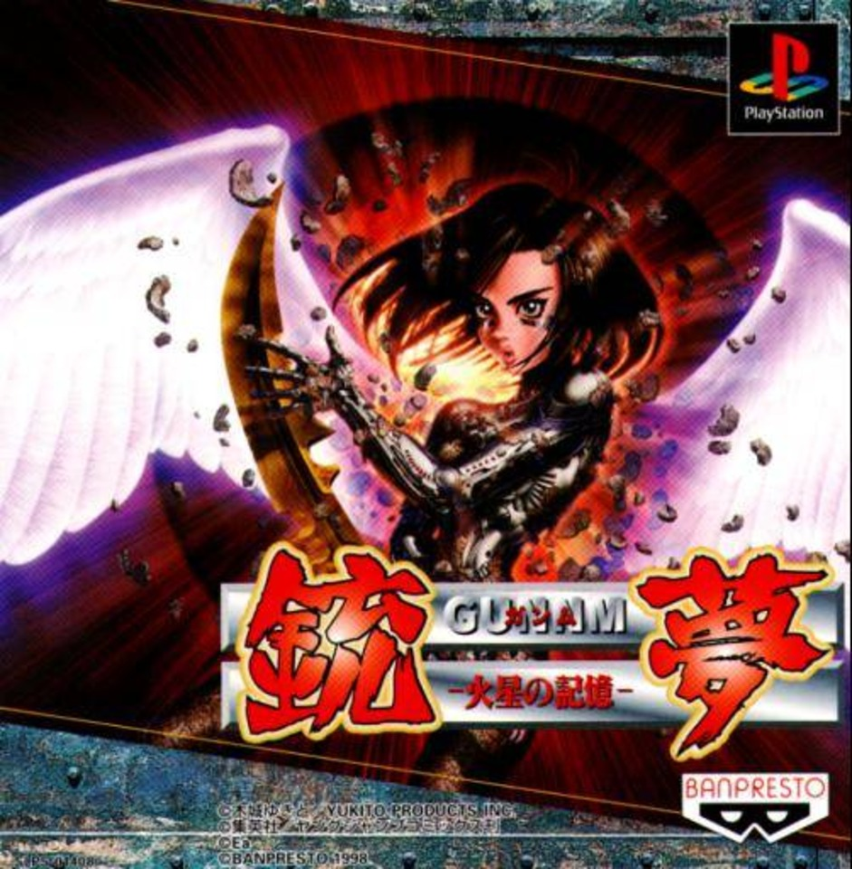
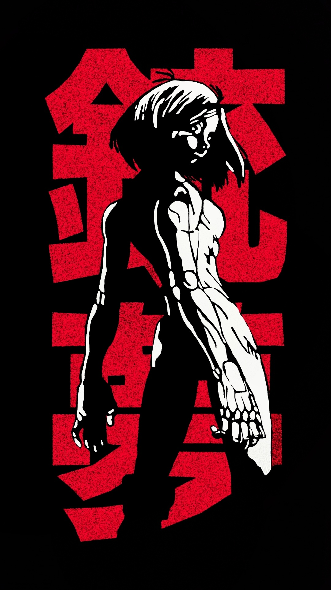
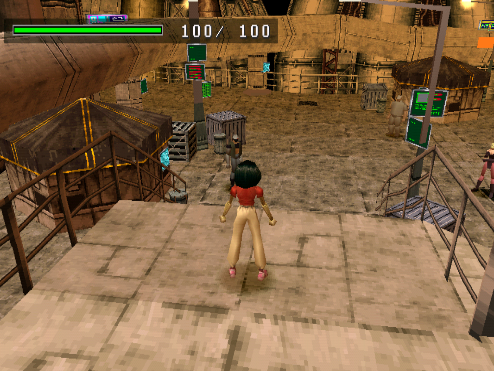
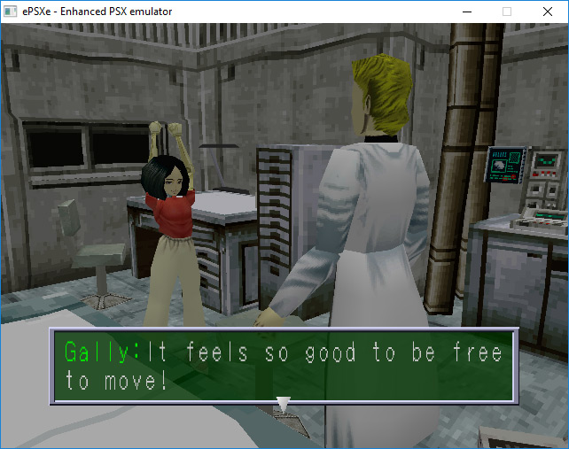

GUNNM: MARTIAN MEMORY
Gunnm: Martian Memory es un videojuego de rol de acción de 1998 para PlayStation basado en la serie de manga Battle Angel Alita. Hasta la fecha, es el único videojuego Battle Angel Alita y el único desarrollado por Yukito Products. Por ahora solo se ha lanzado en Japón.

MARTIAN MEMORY: HISTORIA
Gunnm: Martian Memory es una adaptación del manga Battle Angel Alita, que sigue a la protagonista y personaje principal, Alita (Gally), desde su descubrimiento en el vertedero por Daisuke Ido hasta su carrera como agente TUNED. La historia incluye elementos adicionales que el creador Yukito Kishiro había concebido cuando terminó el manga original en 1995, pero que no pudo llevar a cabo en ese momento, y que implicaban la salida de Alita al espacio exterior.

MARTIAN MEMORY: GAMEPLAY
La historia avanza a través de la finalización de las rondas de la historia y de los jefes en cada nivel, con escenas de corte renderizadas en tiempo real. El jugador navega con Alita a través de entornos en 3D desde una perspectiva en tercera persona, explorando zonas e interactuando con NPCs, incluyendo otros personajes que aparecen en la serie. En el modo historia, el jugador tiene la opción de entrar en el modo batalla pulsando el botón "Select", o evitar el combate corriendo entre los enemigos. En los combates en los que intervienen varios adversarios, el jugador lucha contra cada uno de ellos por turnos.
Dos aspectos del mundo de Battle Angel Alita que aparecen en la historia original, son: el sistema de hunter-warriors y el Motorball, aparecen en el juego. El primero surge en el juego como medio para ganar dinero. El jugador puede salir del modo historia en cualquier momento y viajar a ciertas zonas a través del mapa del mundo para luchar y derrotar a los oponentes con etiquetas de precio que aparecen sobre sus cabezas. Esto se puede utilizar para comprar armas y mejoras. En los partidos de Motorball, Alita corre por la pista y tiene que sobrevivir a una carrera y enfrentarse a otros jugadores, enfrentándose a jefes al final de la pista en partidos más avanzados.

